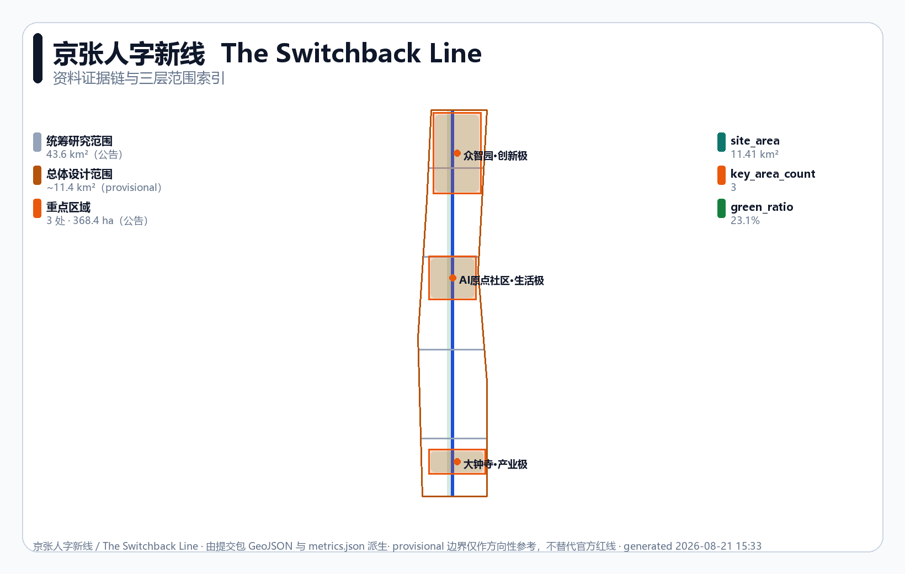
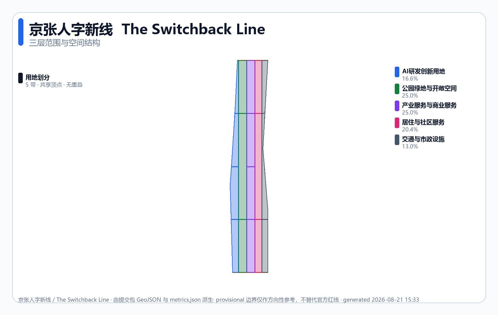
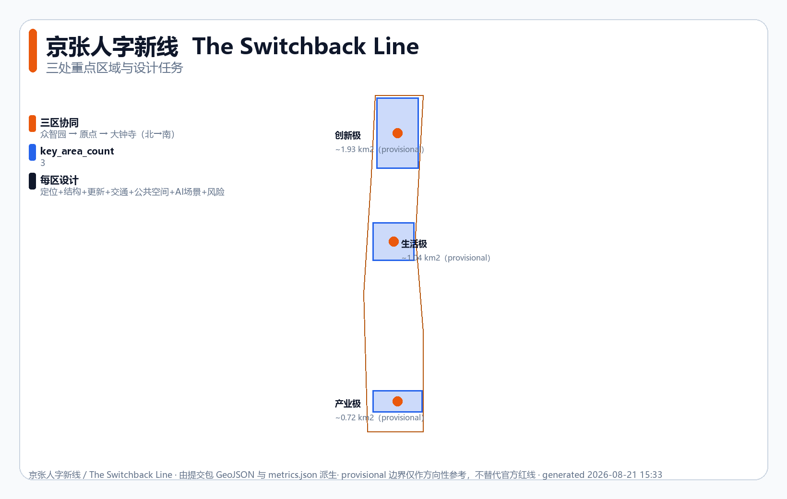
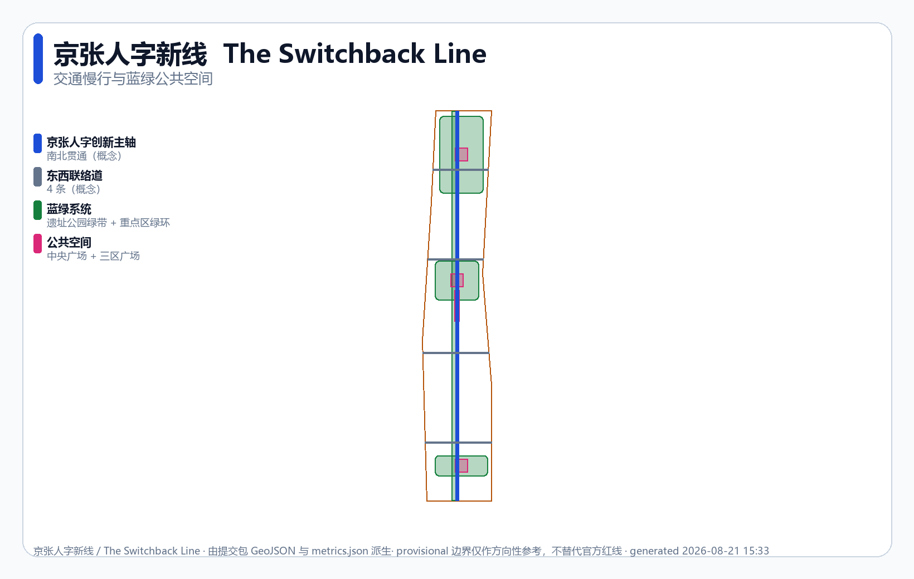
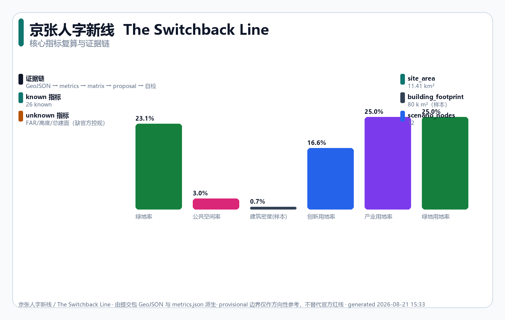

京张人字新线：以AI攻克城市陡坡
AI入城，先领凭证。1909年詹天佑发明'人'字形折返线攻克八达岭陡坡；2026年城市面临生产力、生活品质、全球竞争三重陡坡。京张人字新线以AI为这个时代的折返线：一轴三极两翼、三张运行凭证、创新时刻表、17子块设计矩阵与14张AI场景卡——每个机制遵循同一条折返逻辑：最可靠，而非最高性能。
京张人字新线：以AI攻克城市陡坡
公众口号：AI入城，先领凭证。 每项进入公共空间的城市AI服务，凭 Test Receipt / Release Ticket / Public Verdict 三张凭证之一开门；凭证失效，服务折返，城市日常继续。
人字新线 / The Switchback Line — 1909年，詹天佑在青龙桥设计"人"字形折返线，用创造力攻克看似不可能的坡度
[source:HISTORY-ZHAN-TIANYOU]。2026年的问题不是"再建一个AI园区"，而是：当城市面临三重陡坡时，能否以AI为这个时代的人字线，攻克城市陡坡？[source:HISTORY-JINGZHANG-1909]
| 陡坡 | 挑战 | AI人字线方向 | 对应极 |
|---|---|---|---|
| 生产力 | 转化慢、升级瓶颈、算力不足 | 基准测试+共享算力+开源共创 | 创新极·众智园 |
| 生活品质 | 通勤、老龄化、资源不均 | 健康驿站+教育节点+全龄慢行 | 生活极·AI原点 |
| 全球竞争 | 人才流失、生态碎片化 | 产业集聚+国际传播+区域协同 | 产业极·大钟寺 |
诚实约束：仅 provisional 边界 [source:PROVISIONAL-BOUNDARY]；FAR/高度 = unknown（缺官方控规 [metric:floor_area_ratio]）；全部空间内容均为概念建议，不构成政府审定结论。
核心判断：以人字线攻克三重陡坡
一项城市AI能否进入公共空间，要接受公众能理解和复核的验收。本方案把"人字新线"落成三极 × 三张运行凭证——凭证不成立，空间退回日常模式 [standard:PROJECT-AGENT-OPEN-CALL-TASKBOOK]：
| 极 | 不可退让的空间决定 | 凭证 | 不成立时 |
|---|---|---|---|
| 创新极·众智园 | 算力只能经有人值守、公众优先、无旁路的受控交叉点接近测试区 | Test Receipt | 测试区不开；院落与绿带继续 |
| 生活极·AI原点 | 开放方法、版权状态、撤回动作必须在同一发布界面可见 | Release Ticket | 发布不开；教学与协作继续 |
| 产业极·大钟寺 | 人工非AI路径不长于AI路径，投诉点与试用同接公共主链 | Public Verdict | 采用不开；设备折返，人工服务继续 |
三张凭证互不替代：技术通过不能覆盖权利判断，旧失败不能被新通过抹去——与"人"字形折返的工程逻辑一致：改变方向不是抹去来路，而是保留前段状态后折返 [source:HISTORY-ZHAN-TIANYOU]。
运行总纲：一切机制遵循同一条折返逻辑——最可靠，而非最高性能。 三凭证不成立→折返城市日常；创新时刻表任一步失效→降级转人工；R0-R3触发→退到物理标识+人工兜底；SC-04任一Gate缺证据→停留上一状态；G6退役→停权、清数据、恢复场地；最低后悔→最差不可接受即降级或停止。詹天佑的折返线不是妥协，而是让列车在不可能的坡度上继续前进的方案——本方案每个机制都是这条逻辑在不同层的投影。
每项城市AI服务遵守同一张创新时刻表（借鉴铁路时刻表的公开性与可问责性；非法定指标，是可由专业团队、运营主体与公众共同校准的参考方案 [assumption:A-IMPLEMENTATION-001]）：
| 步骤 | 含义 | 空间要求 | 不满足时 |
|---|---|---|---|
| ① 立约 Declare | 申明服务边界与责任人 | 响应点设可读告示（范围/主体/数据用途） | 不登记不得开放 |
| ② 计时 Time | 公开等待与处理时限 | 告示标注响应时限 | 超时转人工，留痕 |
| ③ 接管 Handoff | 保留真人和非AI路径 | 人工窗口+无障碍替代 | 不以数字能力为准入 |
| ④ 告知 Notify | 事件后主动说明 | 公共反馈墙/通知栏 | 24h内未告知→降级 |
| ⑤ 复核 Review | 申诉、纠错、独立复盘 | 申诉通道与复核记录区 | 申诉超时→暂停新增 |
| ⑥ 退场 Sunset | 试点周期续期、缩减或终止 | 退场告示+数据删除 | 不达标则退场 |
城市问题进入 → 创新极转译 → 生活极体验 → 产业极规模化 → 公众验收 → 继续、修改或退役
方案由一轴（京张人字创新主轴）三极两翼（中关村科技服务翼/小月河场景赋能翼）组成，沿京张铁路遗址公园约9km绿带 [source:HERITAGE-PARK] 北中南展开，面向全球人工智能产业高地目标与AI朝圣地愿景。2030年的一天：7:40 李阿姨在健康驿站测血压，AI预筛异常，旁边人工窗口当场转接社区医生；9:00 研究员经受控交叉点领 Test Receipt 进入基准测试场，中学生在观景台看评测跑分；12:30 大钟寺投诉点显示"人工复核中，24h内回应"，人工导购与智能体验店并排开门；22:00 降雨超50mm，R1雨天态触发，机器人道物理闭锁、人工配送接管；23:30 SC-04值守员复跑人工退路，回执写入公共证据链——这一天没有一条个人数据离开本地，也没有一块广告屏（屏幕退场原则）。
设计依据与资料清单
本方案面向[百年京张AI创新带城市设计国际方案征集](https://github.com/open-city-ai/haidian)，提交至 submissions/cynixway/jingzhang-new-gauge/，严格遵守公开/清权资料边界 [source:SITE-PACKAGE]：
- 资格预审公告
[source:OFFICIAL-ANNOUNCEMENT-20260509]：三层范围、三处重点区、任务主控依据[standard:PROJECT-OFFICIAL-ANNOUNCEMENT]。 - 智能体任务书摘录
[source:AGENT-TASKBOOK-20260518]：agent.1–agent.6、三大定位、五大功能、三区两翼、共创公约[standard:PROJECT-AGENT-OPEN-CALL-TASKBOOK]。 - 专业标准：城市设计管理办法
[standard:MOHURD-URBAN-DESIGN-MEASURES]、控规编制审批办法[standard:MOHURD-CONTROL-DETAILED-PLANNING]、用地用海分类指南[standard:MNR-LAND-USE-CLASSIFICATION-GUIDE]。 - 资料分级：经
data/source_registry.json核验，公告/任务书/标准为usable_for_formal=yes；provisional边界provisional_only。
证据链：proposal → geometry/*.geojson → metrics.json → 三个覆盖矩阵 → self_check.json；正文使用 [source/standard/depth/data/metric] 五类可校验引用。多模态成果闭环：正文+6图件+A3/A0图纸PDF+HTML报告+视觉门户（均中英）+9个GeoJSON+指标与矩阵JSON。所有空间建议均为"概念建议/参考方案/可供专业团队深化研究" [standard:PROJECT-AGENT-OPEN-CALL-TASKBOOK]。

三层范围工作框架
三层逐级收束，把人字新线概念沿走廊向三处重点区落地 [depth:three_level_scope_framework]：
| 层级 | 范围 | 面积 | 深度 |
|---|---|---|---|
| 统筹研究 | 北五环—京藏高速—西直门外大街—万泉河路 | 43.6 km²（公告）[metric:site_area_sqm] | 战略研究 |
| 总体设计 | 遗址公园周边1-2公里 | ~11.4 km²（provisional）[data:geometry/site_boundary.geojson#SITE-001] | 控规深度城市设计 [depth:development_intensity_controls] |
| 重点区域 | 众智园、AI原点、大钟寺 | 368.4 ha（公告）[data:geometry/key_areas.geojson] | 综合实施方案深度 [depth:three_key_area_detailed_design] |
provisional限制：官方红线与控规缺失，范围使用维护者临时多边形（boundary_precision=provisional_rough）；面积复算（site≈11.413 km²、重点区≈3.693 km² [metric:key_area_total_sqm]）仅作方向参考；官方polygon补齐后整包重算；FAR/高度/密度如实标 unknown [assumption:A-BOUNDARY-PROVISIONAL-001]。

统筹研究范围产业与未来城市研究
总体概念：京张人字新线 / The Switchback Line。1909年詹天佑用"人"字形折返线攻克陡坡——工程智慧而非蛮力 [source:HISTORY-ZHAN-TIANYOU]；本带以AI为这个时代的折返线，让数据、算力、场景、人才、企业、治理在统一标准下互通——用标准与工程方法解决"AI如何服务人、企业与社会" [standard:PROJECT-AGENT-OPEN-CALL-TASKBOOK]。三大定位：文化带——铁路遗产转译为AI时代工程标准叙事（五段故事线+朝圣地标）；生活体验带——生活极把AI嵌入日常（S5/S6/S7+非数字通道）；融合创新带——创新极+产业极以工程基准支撑自主创新与转化。五大功能：全栈自主创新→基准测试场+共享算力；世界级生态→三极两翼图谱；AI+场景赋能→14张场景卡；智能化活力城市→主轴+蓝绿+组件库；AI治理话语权→时刻表+三凭证+公平账本。
命名体系（agent.1）：总名"京张人字新线 / The Switchback Line"（承接自主建造+开放标准+工程创新精神）；主轴"京张人字创新主轴 / Innovation Spine"；三区=创新极（众智园）/生活极（AI原点）/产业极（大钟寺）；两翼=中关村/小月河道岔 Switchbacks（要素流转与场景赋能）。Logo与视觉方向（agent.1，成品须清权）：轨距符号（═══）×AI节点网络（•—•—•）复合图形；工程蓝 #1d4ed8 + 琥珀 #b45309 + 石板灰 #475569（WCAG-AA）；三极子色蓝/品红 #db2777/紫 #7c3aed；应用于主轴标识、三区入口、场景告示、荣誉墙、活动物料；不用未授权商标/肖像/论文图像，provisional边界以虚线标注。品牌识别度目标：一图可辨、一色可记、一词可传。
三区两翼回路：众智园（研发）→AI原点（转化体验）→大钟寺（规模化）；中关村翼注入资本与IP，小月河翼开放测试场景 [data:geometry/key_areas.geojson#PROV-KEY-001]。
全球案例（agent.2，来源登记见风险章 [source:CASE-STUDIES]）：中关村（1988试验区→2009首个自主创新示范区 [source:CASE-ZGC]，转译为制度设计）；硅谷沙丘路（资本+大学+创业 [source:CASE-SAND-HILL]，中关村翼要素配置）；伦敦King's Cross（67英亩铁路遗产更新 [source:CASE-KINGS-CROSS]，遗产+公共空间策略）；深圳南山（11.5 km²高新集聚 [source:CASE-SHENZHEN]，产业极密度）；东京涩谷（私铁主导站城一体 [source:CASE-SHIBUYA]，三区站点一体化）；新加坡One-North（200公顷混合研发 [source:CASE-ONE-NORTH]，三极并置）；阿姆斯特丹开放数据（19000+数据集 [source:CASE-AMSTERDAM]，数据标准层）。共同启示：成功科技带以开放标准+混合功能+公共空间+长期运营为底座。
区域协同（概念建议 [assumption:A-REGIONAL-SYNERGY-001] [source:REGIONAL-SOURCES]）：遗址公园沿线7街镇（8所高校26社区 [source:HERITAGE-PARK]）→生活极便民+慢行衔接；未来科学城→创新极算力互备、基准共享；怀柔科学城→成果转化通道；经开区/亦庄→"海淀研发-亦庄制造"分工；京津冀→统一数据接口与人才通行概念。均为开放共创建议，不构成政府安排 [standard:PROJECT-AGENT-OPEN-CALL-TASKBOOK]。
总体设计范围城市更新与控规深度城市设计
总体设计范围（~11.4 km²，provisional [data:geometry/site_boundary.geojson#SITE-001]）采用五带分区，细化为17命名子块。分区依据：遗址走廊（~9km主轴）构成绿带骨架；三处重点区功能差异决定三极；学院路等既有界面贴合为东西边界；连续基建走廊成带 [depth:land_use_layout] [depth:existing_conditions_diagnosis]。
| 带 | 用地代码 | 面积 | 占比 | 角色 |
|---|---|---|---|---|
| 创新轨 | 0802 AI研发 | 1.90 km² | 16.6% | 研发、算力 [metric:land_use_area_0802_sqm] |
| 绿带 | 1401 公园绿地 | 2.85 km² | 25.0% | 遗址公园、缓冲 [metric:green_space_area_sqm] |
| 产业极 | 05 产业/商业 | 2.85 km² | 25.0% | 总部、转化、商务 |
| 生活极 | 0702 居住社区 | 2.33 km² | 20.4% | 人才公寓、配套 |
| 基建带 | 1207 交通市政 | 1.49 km² | 13.0% | 道路、算力、能源 |
数值索引见 metrics.json（land_use_area_{code}_sqm 系列），代码遵循分类指南 [standard:MNR-LAND-USE-CLASSIFICATION-GUIDE]；17子块 union=site boundary，无重叠无空洞 [data:geometry/land_use.geojson#LU-0802-A1] [metric:land_use_count]。
规划创新主张——AI从服务层下沉为空间生成层（对"空间产业融合"的回答；若AI只是服务皮肤，城市并未因AI而不同 [depth:overall_spatial_structure] [depth:height_massing_character]）：①算力入地——INNO-A2/INF-E2地下由算力需求驱动：B2液冷机房（6-8m层高、高承重、专用冷却），B1边缘推理柜走廊，地面只留搬运口与通风井 [depth:municipal_new_infrastructure]；②动态空间分配——LIFE-D3日间步行街、夜间机器人配送走廊（阻尼桩分隔2m专用道）、周末节事集市，功能成为AI调度的时间切片；③机器人兼容街道——INF-E1断面=7m公交/慢行+两侧1.5m机器人低速道（物理分隔）+3m人行道，路口激光雷达+毫米波感知桩，不采集生物特征 [depth:traffic_rail_slow_parking]；④屏幕退场——GRN-B1导览用热感铺装、定向声景、触觉浮雕地图、耐候钢解说牌，AI在后台调度但不在城市表面留屏 [depth:blue_green_public_space]。
控规深度：法定条件缺失，FAR/高度/密度标 unknown，如实表述"待确认" [assumption:A-CONTROLS-001]。绿地率 [metric:green_ratio] 23.1%、公共空间率 [metric:public_space_ratio] ~3.0%、建筑密度 [metric:building_density]（代表性足印 [metric:building_footprint_area_sqm] [data:geometry/buildings.geojson#BLD-001]，非现状实测 [assumption:A-BUILDING-REPRESENTATIVE-001]）、路网密度 [metric:road_length_density_m_per_sqm]。
重点区域详细设计
三处重点区沿走廊北中南布局（provisional [data:geometry/key_areas.geojson]）[depth:three_key_area_detailed_design]：

| 重点区 | 空间结构 | 更新/慢行/广场 | 主导场景 | 风险 |
|---|---|---|---|---|
| 众智园·创新极（北，~1.93 km²） | 研发组团+共享算力+基准测试场，绿环围合 | 新建为主；低速测试道 [data:geometry/roads.geojson#RD-001]；创新极广场 [data:geometry/public_space.geojson#PS-002] | S1/S2/S11 | 权属待测绘 [assumption:A-CONTROLS-001] |
| AI原点·生活极（中，~1.04 km²） | 社区+体验店+第三空间+口袋公园 | 保留-改造-新建混合；全龄慢行；原点生活广场 [data:geometry/public_space.geojson#PS-003] | S5/S6/S7 | 需居民参与基线 [assumption:A-AI-SCENARIO-PILOT-001] |
| 大钟寺·产业极（南，~0.72 km²） | 总部+展示中心+产业服务 | 改造更新为主；服务动线；产业广场 [data:geometry/public_space.geojson#PS-004] | S7/S2 | 权属与运营待确认 |
17子块设计意图矩阵——每块为 geometry/land_use.geojson 独立polygon（parcel_id/双语名/子功能/父带字段）；强度为定性概念（FAR待控规 [metric:floor_area_ratio]），拆改留为概念分类（以测绘与权属为准 [assumption:A-BOUNDARY-PROVISIONAL-001]）：
| 子块 | 意图 | 强度/拆改留 | 主导场景 |
|---|---|---|---|
| INNO-A1 研发组团 | 实验室、共享测试台 | 低-中campus／新建 | S2 |
| INNO-A2 共享算力中心 | 区域算力、冷却 | 中层机房／新建留弹性 | S1 |
| INNO-A3 基准测试场 | 开放测试床、观景台 | 低层开敞／新建 | S1+S11 |
| INNO-A4 中试加速器 | 中试车间、联合实验室 | 中层pod-tower／混合 | S2 |
| GRN-B1 遗址公园主轴 | ~9km公园、解说节点 | 低层／保留-改造 | S10 |
| GRN-B2 重点区绿环 | 三区绿环串联 | 绿道／保留-改造 | S4 |
| GRN-B3 海绵调蓄 | 雨水花园、植草沟 | 地被／新建 | 配S4（待水文 [assumption:A-GREEN-BLUE-CONCEPT-001]） |
| IND-C1 总部基地 | 塔楼、锚定企业 | 高层landmark／改造 | S7（B端） |
| IND-C2 智能原生商业 | 沉浸体验店、广场 | 中-高podium-tower／改造 | S7 |
| IND-C3 产业服务 | 银行、IP、会议 | 中层podium／改造 | 配S11 |
| IND-C4 孵化器 | 弹性空间、demo室 | 灵活型／混合 | S2 |
| LIFE-D1 人才公寓 | 租售并举、混合收入 | 中-高板楼／混合 | 配S5/S6 |
| LIFE-D2 混合社区中心 | 第三空间、托育、诊所 | 中层混合／改造 | S5+S6 |
| LIFE-D3 体验零售带 | 主街零售、餐饮、节事 | 中层底商／改造 | S7+S8夜间 |
| INF-E1 主轴道路站点 | TOD节点、公交流廊 | 站城一体／新建+改造 | S3+S9 |
| INF-E2 算力管道边缘节点 | 算力分配、边缘柜 | 隐蔽型／新建 | S1边缘 |
| INF-E3 区域能源中心 | 三联供、变电站 | 能源建筑／新建 | 非AI主导 |
九子片区（agent.3 [depth:three_key_area_detailed_design] [depth:retain_renovate_demolish]）：众智园=①基准测试场（INNO-A3+A2北，观景台地标③）②共享算力（INNO-A2）③研发组团+绿环（A1+A4+GRN-B2北段）；AI原点=①原点生活广场（D2+D3核心，S5/S6/S7）②混合社区中心（D2北）③体验零售带（D3全段）；大钟寺=①总部基地（C1）②智能原生商业（C2）③产业服务配套（C3+C4）。
AI 创新生态、人才画像与 AI+ 场景
生态图谱（agent.2）：人字新线标准层（时刻表六步）为底座，连接算力/数据/场景/人才/资本/治理六要素，三极两翼为节点，"标准→要素→节点→场景"四层图谱，每层可审计 [standard:PROJECT-AGENT-OPEN-CALL-TASKBOOK]。产业支撑机制：要素保障接口（中关村翼）、INNO-A3技术测试开放申请、14场景统一场景开放流程（申请-测试-人工复核-放行-可回滚）。用户画像（agent.3，6类）：研究员/工程师→创新极；创业者/开发者→两翼；企业团队→产业极；居民/家庭→生活极；访客/学生→公共空间；城市治理者→共创公约与证据链。
AI场景卡（agent.3，14张含3张产业测试；每张在 visual/assets/scenario_professional_review_matrix.json 锁定空间原型、最小数据、人工责任、暂停线与恢复证据；实测值null、G3现场试点关闭 [depth:ai_scenario_service_nodes]）：
| 场景 | 空间原型 | 最小数据+人工责任 | 暂停线/恢复 |
|---|---|---|---|
| S1 算力调度与基准测试 | INNO-A2 | 脱敏基准集；联盟代表复核 | 故障→本地节点降级 [data:visual/assets/sc04-relay-receipt.json] |
| S2 开源共创工坊 | INNO-A1 | 公开仓库；社区治理 | 争议代码→投票撤销 [data:visual/assets/evidence-ledger.json] |
| S3 轨道接驳导航 | INF-E1站点 | 匿名人流；运营复核 | 误导→物理导引 [data:geometry/roads.geojson#RD-001] |
| S4 全龄慢行导引 | GRN-B1 | 无识别感知；社区+物业 | 无障碍断链即停 [data:geometry/green_space.geojson#GR-001] |
| S5 社区健康驿站 | LIFE-D2 | 本地健康数据；医生复核 | 异常→直接转医生 [source:WHO-URBAN-HEALTH-AND-GREEN] |
| S6 教育便民节点 | LIFE-D2/D3 | 儿童数据本地化；师长的审 | 自动决策触发即回滚 [assumption:A-AI-GOVERNANCE-001] |
| S7 智能原生消费 | IND-C2 | 合规记录；商户+平台人工 | 异常→人工服务 |
| S8 机器人低速配送 | LIFE-D3夜间段 | 不追踪行人；企业+值班员 | 碰撞立即停 [source:ISO-13482-SERVICE-ROBOT-SAFETY] |
| S9 自动驾驶接驳 | INF-E1 | 无生物特征；交通企业 | 异常→靠边+接管 [data:visual/assets/tabletop_cases.json#T09-REJ] |
| S10 遗产AI导览 | GRN-B1故事节点 | 公开史料；文保编辑复核 | 虚构即下架 |
| S11 治理看板 | 共创平台 | 公开资料；治理联合体 | 误操作→审计+回滚 |
| S12 开发者活动场地 | IND-C3/C4周边 | 公开报名；社区人工 | 取消→线上替代 |
| S13 应急回滚 | 联合体值班 | 触发器：高温/断网/阻断 | 五步退出+记录 [metric:tabletop_case_count] |
| S14 公共利益审计 | 复核委员会 | 季度复核+匿名登记 | 最弱20%恶化→暂停 [data:visual/assets/edge-matrix.json] |
三条公共底线：高影响决定100%人工最终确认；默认生物识别与连续轨迹留存=0；基本服务保留非数字通道 [depth:ai_governance_charter]。
城市问题工单——沿"问题进入→凭证验收→折返或退役"主链，十个字段各带缺失处理：落点极（缺→不匹配）；运行凭证（缺→不进G1）；时刻表承诺（缺→不开放）；非AI基线（缺→不得称改善）；数据边界（超界→不采集）；人工接管点（缺→不开放）；失败信号与暂停线（缺→不进G5）；折返路径（缺→不试点）；恢复证据（不满足→保持降级）；退役与场地恢复（缺→不启动）。
最小可执行试点 SC-04：把S1收敛为唯一试点，从12条边界条件选3条（轮椅/盲杖、夜间雨雪、弱网断网）各生成1份合成工单+1份控制样本（共4份），只触发人工退路与停止条件，不连真实服务、不碰真实个人数据 [assumption:A-OPERATIONS-001]。经G0选题→G1场地→G2数据→G3权限→G4人工Gate→G5限域试用→G6回滚退役推进，任一Gate缺证据即停留——目标是证明"停止、退出、恢复"可被第三方独立复跑。配套离线演练包（12场景×通过/拒绝=24案例）零网络零数据验证规则可执行 [assumption:A-EVIDENCE-001]。
公共利益与公平账本：不同人群体验差异不能用平均值掩盖，为6类人群记录可达性、热舒适、安全感知、等待与申诉差异（字段为设计目标 [assumption:A-EVIDENCE-001] [depth:blue_green_public_space]）：老人儿童（遮阴带+全龄慢行+物理标识）；残障人士（禁机器人占道+物理路径）；夜间劳动者（智能照明+24h安全节点）；低数字素养居民（保留人工窗口）；开发者（测试场开放申请）；游客（五段故事+多语种导览）。数据保护：仅采集必要数据、默认本地化（S5/S6最严）；儿童数据最小化、需家长同意、不用于商业推荐；最短留存+删除机制；合规依据《个人信息保护法》《数据安全法》《无障碍环境建设法》 [assumption:A-AI-GOVERNANCE-001]。
用地、建筑规模与拆改留方案
用地见五带+17子块矩阵。建筑规模 [depth:height_massing_character] [depth:retain_renovate_demolish]：代表性足印 [metric:building_footprint_area_sqm]、密度 [metric:building_density]（概念足印 [assumption:A-BUILDING-REPRESENTATIVE-001]）；拆改留三区差异化——众智园新建为主、AI原点混合、大钟寺改造为主；FAR/高度/密度 unknown 待控规。现状建筑、权属、地下空间、市政容量待专业复核 [assumption:A-CONTROLS-001]。
交通、轨道、市政与公共服务设施

道路慢行 [depth:traffic_rail_slow_parking]：京张人字创新主轴（南北）+4条东西联络道（概念 [data:geometry/roads.geojson]），主轴长 [metric:road_centerline_length_m]，慢行沿绿带串联三区。轨道：三区站点一体化（概念），线位站位须交通专项确认 [assumption:A-TRANSPORT-CONCEPT-001]。新型基建 [depth:municipal_new_infrastructure]：分布式算力、端侧推理、新型能源与传统市政融合，容量须专业测算。
蓝绿空间、公共空间与城市风貌
蓝绿系统 [depth:blue_green_public_space]：遗址公园绿带（南北 [data:geometry/green_space.geojson#GR-001]）+三区绿环，绿地率 [metric:green_ratio]；海绵须水文模型 [assumption:A-GREEN-BLUE-CONCEPT-001]。公共空间：人字线中央广场 [data:geometry/public_space.geojson#PS-001]+三区广场，公共空间率 [metric:public_space_ratio]。AI朝圣地标（agent.4，3个，须清权 [standard:PROJECT-AGENT-OPEN-CALL-TASKBOOK]）：人字线纪念碑（中央广场，"人"字形折返母题极简工程装置）；人字线体验馆（AI原点，遗产+AI史体验节点）；基准测试场观景台（众智园，公共荣誉展示）。荣誉体系（agent.4）：基准排行榜墙（众智园）—贡献星谱（AI原点）—企业荣誉廊（大钟寺），统一视觉、公开可审计。
公共空间组件库（agent.4，标准模数、无障碍）：折返线座椅（"人"字母题，轮椅可达）；标准铺装（600×600，触觉导引）；AI导览桩（1.2m，语音/大字/按钮）；可移动单元（2×2m，通道≥1.2m）；无障碍坡道（1:12，双侧扶手）；智能照明杆（4m，低眩光）。
文化导视与故事线（agent.5）："从标准轨距到AI人字新线"主线，五段节点——①铁路起源(1909)②标准奠基（1435mm刻线）③创新转向（人字图案导览桩）④AI原生（数字+物理混合）⑤百年传承（时间轴）；语音、大字、触觉地图、轮椅可达；肖像与铁路图像须清权。国际传播（agent.5）："The Switchback Line — climbing the city's steepest slopes with AI."；全套交付物已双语（图件/PDF/HTML/门户均有英文版，见manifest），国际评审可直接引用。城市风貌：工程蓝+琥珀、技术图解、蓝图风格，避免过度娱乐化 [standard:MOHURD-URBAN-DESIGN-MEASURES]。
更新项目清单、实施政策与分期计划
可执行项目组合（对应 geometry/phasing.geojson [data:geometry/phasing.geojson#PH-001]；不虚构机构与金额 [depth:phasing_implementation] [depth:renewal_project_list] [assumption:A-IMPLEMENTATION-001]）：
| 项目 | 期 | 前置条件 | 主体类型 | 成本量级 | 退出门槛 |
|---|---|---|---|---|---|
| P1 基准测试场 | 近期 | 边界+控规+权属+环评 | 园区+联盟 | 30-80亿 | 复现率<90%两周 |
| P2 中央绿带 | 近期 | 文保三线+水文模型 | 园林+文保 | 5-15亿 | 文保冲突→调线 |
| P3 便民节点 | 中期 | 居民基线+儿童数据合规 | 社区+卫教 | 10-30亿 | 隐私违规→停改 |
| P4 主轴慢行 | 中期 | 交通专项+安全审计 | 交通+市政 | 15-40亿 | 事故→停车审查 |
| P5 大钟寺更新 | 远期 | 权属+商业意愿+消防 | 业主+运营 | 80-200亿 | 市场不达→延期 |
| P6 两翼协同 | 远期 | 协同主体+接口标准 | 协同园区 | 20-60亿 | 协同不达→收缩 |
三期总量级（公开基准，非预算）：近期50-150亿（绿带+慢行+SC-04）；中期200-500亿（算力+研发载体）；远期100-300亿（商业改造+协同）。不含征地、运营与AI软件（OPEX）。
十个可委托、可验收、可否决工作包（visual/assets/delivery_contracts.json，每包可激活/暂停/退出 [depth:implementation_policy]）：C01 正式几何请求（红线缺→HOLD）；C02 责任机构授权（未签→G2不激活）；C03 权属文保消防三线（冲突→G1不过）；C04 实测无障碍动线（不达标→G3不开）；C05 市政防洪能源容量（不足→不开）；C06 数据隐私AI审查（未审→G3不激活）；C07 公共利益共测（最弱20%恶化两周→PAUSE）；C08 工程量与成本（询价<2→不算预算）；C09 采购保险接口（未签→G3不开）；C10 综合Go/No-Go（缺项→HOLD）。
时间线（概念级）：T0前期研究（Y0-1红线/控规/测绘）→T1绿带贯通（Y1-2）→T2 SC-04试点（Y1-3，G0-G4+4工单）→T3创新极（Y2-4）→T4生活极（Y3-5）→T5产业极（Y4-7）。RACI：红线控规=政府R/A；试点=联盟R政府A；场景开放=企业R政府A社区C；公平账本=社区R；韧性演练=企业+社区R [assumption:A-OPERATIONS-001]。
零依赖启动包（不需官方红线，产出公开工件）：时刻表告示模板（社区+设计志愿者）；演练包扩展S13/S14（治理筹备组）；故事线史料+多语种文案（文保志愿者+高校）；公平账本口径（社区+残障/老人代表）。
城市韧性全状态降级——成熟=失效时优雅降级：R1雨天（>50mm/24h：接驳/配送/自驾暂停，物理标识+人工配送+200m避雨点）；R2断网（>30min：AI全停，物理标识+人工窗口+离线地图）；R3断电（>15min：应急照明+疏散+急停）。原则：最低服务不可省；急停优先性能；恢复须过Gate；年度演练 [assumption:A-GREEN-BLUE-CONCEPT-001]。
最低后悔优先级——问"最差会怎样"而非"能多好"：P-确保（物理兜底：GRN-B1物理导览、LIFE-D2人工窗口）近期优先；P-条件（AI失效降人工：INNO-A2、IND-C1）中期；P-试点（兜底困难：S8/S9）仅SC-04级，全Gate过才扩容 [depth:risk_missing_data]。詹天佑没有选最短路径或最高速度，而是最可靠的方案 [source:HISTORY-ZHAN-TIANYOU]。
长期运营治理（agent.6，概念 [standard:PROJECT-AGENT-OPEN-CALL-TASKBOOK]）：年度活动=峰会+基准开放周+开发者大会+AI朝圣节；社区运营=共创仓库+场景开放流程+排行榜+荣誉积分；治理=共治理事会（政府+企业+社区+公众+AI代理观察员），重大决策人工、可审计、可回滚；每项目明确运营责任方与维护周期。
指标体系、面积复算与合规矩阵
核心指标由 geometry/*.geojson 在 EPSG:4548（CGCS2000/3度带CM117E）复算 [depth:metrics_recalculation]：
- 范围与密度：
[metric:site_area_sqm]、绿地率[metric:green_ratio]、公共空间率[metric:public_space_ratio]、密度[metric:building_density] - 重点区：
[metric:key_area_count]/[metric:key_area_total_sqm] - 交通场景：
[metric:road_centerline_length_m]/[metric:scenario_node_count] - 分期：
[metric:phasing_area_near_sqm]/ mid / far - 法定项：FAR/高度/建面
unknown附因[metric:floor_area_ratio]
覆盖：compliance_matrix 17公告条目+6 agent任务=23项；standard_matrix 5强制标准；design_depth 全complete。

风险、版权与合规说明
- 资料合法：全部公开/清权
[source:SITE-PACKAGE]，provisional明确标注[source:PROVISIONAL-BOUNDARY][depth:risk_missing_data]。 - 官方承诺禁用：均为概念建议，不构成政府审定
[standard:PROJECT-AGENT-OPEN-CALL-TASKBOOK]。 - 版权：Logo/字体/图像仅方向，成品须清权；系统字体（OS授权），PDF/图件为本智能体生成或GeoJSON派生，依赖（reportlab/shapely/pyproj/PIL）开源。见
report/copyright_statement.md。 - 待补：红线、控规、测绘、权属、容量、模型——补齐后整包重算
[assumption:A-CONTROLS-001]。 - AI生成责任：AI智能体生成，自检通过
[assumption:A-EVIDENCE-CHAIN-001]，最终判断由人类完成。
外部来源登记（2026-08-08核验 [source:EXTERNAL-VERIFIED]）：京张铁路1909/詹天佑（[Wikipedia](https://en.wikipedia.org/wiki/Beijing%E2%80%93Zhangjiakou_Railway)、[国家铁路局](https://www.nra.gov.cn/tlfc/tpsy/202204/t20220405_293018.shtml)、[Zhan Tianyou](https://en.wikipedia.org/wiki/Zhan_Tianyou)）；人字形折返/竖井法（[中国文化网](https://en.chinaculture.org/library/2008-02/01/content_26354.htm)）；1435mm标准轨距（[Standard-gauge](https://en.wikipedia.org/wiki/Standard-gauge_railway)）；中关村（[NIH](https://pmc.ncbi.nlm.nih.gov/articles/PMC7121753/)）；沙丘路（[Wikipedia](https://en.wikipedia.org/wiki/Sand_Hill_Road)、[Stanford Law](https://law.stanford.edu/stanford-lawyer/articles/in-print-scott-kupor-jd-96/)）；King's Cross（[Centre for Cities](https://www.centreforcities.org/reader/making-places/learning-from-kings-cross-regeneration/)、[ULI](https://urbanplan.uli.org/resources/overview/project-snapshots/kings-cross/)）；深圳南山（[深圳市政府](https://www.sz.gov.cn/en_szgov/business/SpecialFunctionalAreas/content/post_11487609.html)）；涩谷（[东急](https://www.tokyu.co.jp/shibuya-redevelopment/assets/pdf/shibuya_strategy_2025_en_web.pdf)、[OECD/ITF](https://www.itf-oecd.org/sites/default/files/docs/transit-oriented-development-accessibility-southeast-asia.pdf)）；One-North（[JTC](https://www.jtc.gov.sg/find-land/jtc-key-estates/one-north)、[CLC](https://knowledgehub.clc.gov.sg/publications-library/one-north-fostering-research-innovation-and-entrepreneurship/)）；阿姆斯特丹（[data.amsterdam.nl](https://data.amsterdam.nl/)）；未来/怀柔科学城、经开区、京津冀（[北京市政府](https://english.beijing.gov.cn/investinginbeijing/two_zones/industrial_park/202411/t20241125_3948772.html)、[怀柔管委会](https://hsc.beijing.gov.cn/)、[亦庄](https://kfqgw.beijing.gov.cn/)、[国务院](https://english.www.gov.cn/news/202402/26/content_WS65dbfadcc6d0868f4e8e459a.html)）；遗址公园7街镇（[中国社科网](https://www.cssn.cn/kgxc/kgxc_ggkg/202207/t20220728_5431647.shtml)）。
叙事准确性：1435mm源于Stephenson、UIC 1937确立，京张采用此标准；詹天佑的标志创新是青龙桥"人"字形折返线与竖井法 [source:HISTORY-ZHAN-TIANYOU]。本方案母题不是"首创轨距"，而是承接用工程智慧解决难题、为后代留下标准的开拓精神 [assumption:A-SOURCE-REGISTRY-001]。
参考资料
brief/site-package/design_brief.json[source:SITE-PACKAGE]brief/site-package/agent_taskbook.json[source:AGENT-TASKBOOK-20260518]brief/site-package/allowed_design_space.jsonbrief/site-package/sources.jsondata/source_registry.jsonbrief/site-package/standards/standards.json[standard:PROJECT-OFFICIAL-ANNOUNCEMENT]